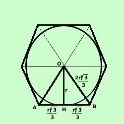

Esagono regolare circoscritto ad una circonferenza
o circonferenza inscritta in un esagono
regolare

Anche qui, congiungendo il centro del cerchio con i vertici dell'esagono si
ottengono 6
triangoli equilateri.
Se considero uno di questi triangoli equilateri,
ad esempio AOB, l'altezza AH, apotema dell'esagono, lo divide in
due triangoli rettangoli con angoli 30° e 60° e che quindi
sappiamo risolvere
Quindi conoscendo il valore di OH = r, raggio del cerchio avremo
| AH = |
OH 3 3
-----------
3 |
| AB = AO = BO =
|
2OH3
-----------
3 |
Naturalmente possiamo anche calcolare le formule inverse: conoscendo il valore
del lato l dell'esagono circoscritto possiamo trovare il valore
r del raggio del cerchio inscritto
| l =
|
2r 3 3
-----------
3 |
| 3 l =
|
2r3 |
| 2r3 |
= 3 l
|
| r = |
3 l
-------------
23
|
razionalizzo
| r = |
3 l3
-------------
6
|
|